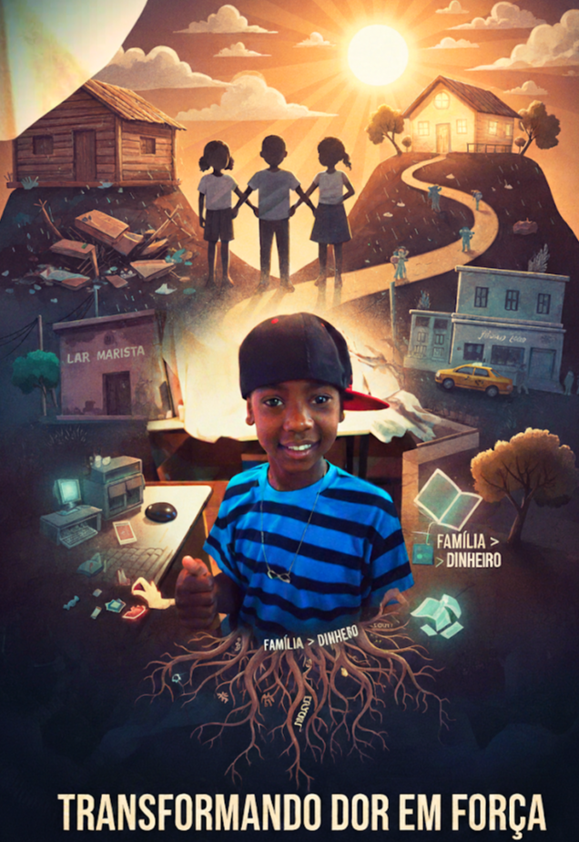

A Trajetória de Luta e Superação: Uma Vida Marcada pela União Familiar
Nascido em 2001, no Hospital da Baleia, em Belo Horizonte (MG), minha vida começou com o cenário que definiria minha jornada: a luta. Cresci ao lado dos meus irmãos — Jéssica, Paloma e Brandino — e da minha mãe, Maria José dos Santos. Meu pai, Brandino da Paz, era uma aparição rara, mas que trazia consigo balas, surpresas e muita alegria, fazendo de cada visita um evento.
Mesmo em meio às dificuldades, a infância foi repleta de memórias marcantes. Brincava na terra com carrinhos e outros brinquedos que comprava junto com meus irmãos. Havia a leveza da infância, mas também a necessidade: muitas vezes, saíamos escondidos de madrugada para vender balas nas ruas e, com o dinheiro, íamos jogar na lan house. Eu sempre me destaquei pela facilidade em conquistar as pessoas com carisma e leveza — algo que até hoje carrego comigo.
O Preço da Sobrevivência e a Força da União
Junto à resiliência, vieram os momentos difíceis. Nossa mãe, muitas vezes, não apoiava os estudos e nos castigava severamente. Saíamos para vender balas às três da manhã, retornando apenas de madrugada para evitar broncas. Foram tempos duros, de castigos e violência, mas que apenas fortaleceram nossa união.
Nossa família enfrentou a instabilidade da rua e a perda de um lar: vivemos no Morro do Papagaio, numa casa de madeirite que desmoronou num dia de chuva, e chegamos a ficar na rua até a prefeitura nos ceder moradia. As ruas guardam muitas histórias, desde o atropelamento por um táxi, fugas assustadoras, até uma pedrada na cabeça durante uma brincadeira que quase me deixou em desespero, só resolvido pelo socorro imediato da minha irmã Jéssica.
A Escolha do Laço Mais Forte
Aos 6 anos, denúncias levaram o Juizado de Menores até nossa casa, no bairro Granja de Freitas. Fomos separados em abrigos: eu para o Lar Marista e minhas irmãs para outro. No abrigo, vivi dos 6 até os 17 anos. Lá, conheci histórias que me inspiraram e me ensinaram muito sobre empatia, dor e esperança.
Um detalhe marcou minha vida: fui colocado na lista de adoção, e a própria madrinha se interessou. Mas **decidi permanecer com minhas irmãs**. Para mim, família sempre valeu mais que qualquer dinheiro.
Transformando Dor em Base
Nunca vou esquecer quando uma assistente social disse à minha irmã que ela não teria condições de nos manter, porque “logo iria arrumar um namorado e nos deixaria de lado”. Essa frase me marcou profundamente. Mas minha irmã não apenas provou o contrário como seguiu firme, lutou, trabalhou e nunca abandonou a gente.
Tenho um orgulho enorme da coragem das minhas irmãs. Com o esforço delas como jovens aprendizes, conseguiram juntar dinheiro e comprar uma casa na Pedreira Prado Lopes (PPL), que até hoje é nossa base. Minha trajetória foi marcada por obstáculos, mas também por resiliência, união e fé. Se hoje estou aqui para contar essa história, é porque nunca deixei de acreditar que, mesmo nas condições mais difíceis, é possível seguir em frente e **transformar dor em força**.